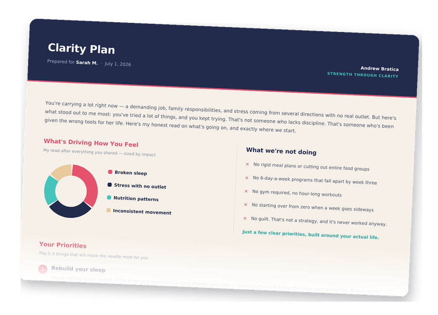

No pressure, no complicated process. Here's exactly what happens when you reach out.
Head to the home page and fill out the short form. I'll get back to you personally within 1 business day and we'll find a time to talk.
Before we talk, I'll send you a detailed questionnaire — your goals, your sleep, your stress, your energy, your relationship with food, what's worked and what hasn't. It's thorough on purpose. Most coaches ask you nothing and hand you a generic plan. I want to actually know you before we ever get on a call. Mostly checkboxes, so it's easier than it sounds.
Then we hop on a free 30-minute video call and I walk you through your Clarity Plan — my honest read on your situation after nearly 15 years of coaching. What I see going on, the 2-3 things I believe would move the needle most for you, and where I'd start. We talk through it together, and you leave with real direction — no generic advice, no pressure.

If you want a coach in your corner, I'll tell you exactly what working together looks like. And if it's not the right fit, no pressure whatsoever — the Clarity Plan is yours to keep either way.
Once we're working together, here's your week:
The first call is free, and it's genuinely useful whether or not we work together. Worst case, you walk away with more clarity than you came with.
Take the first step